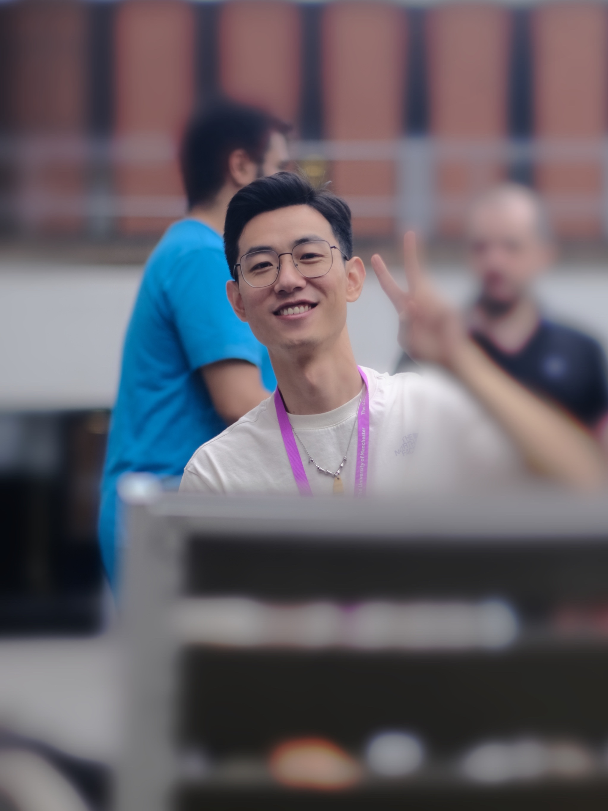
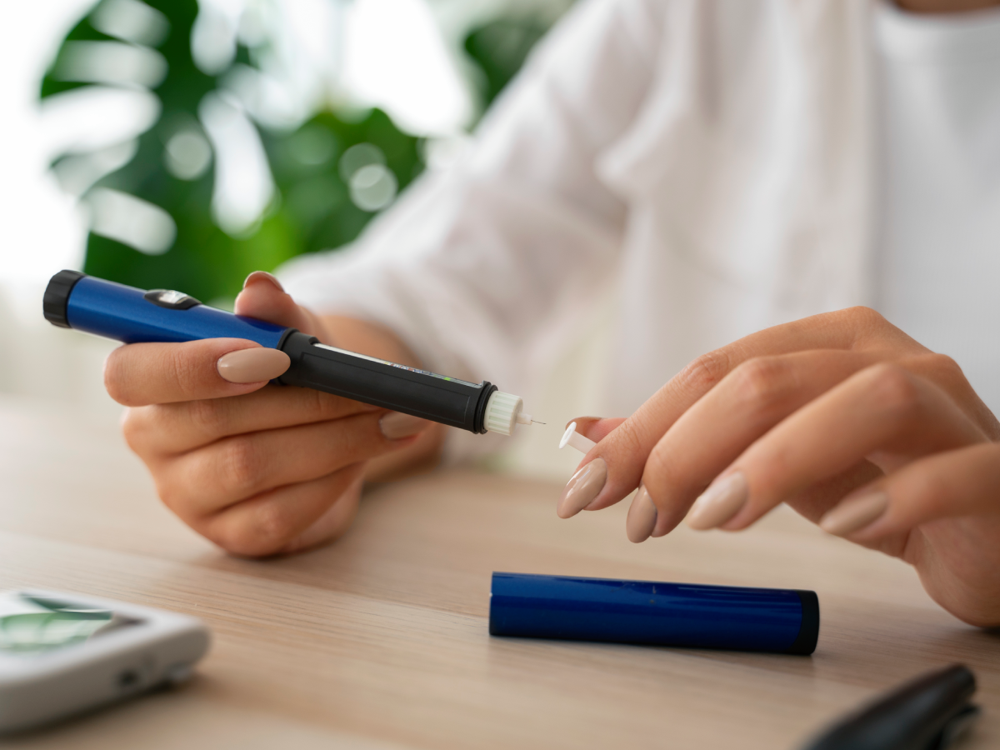
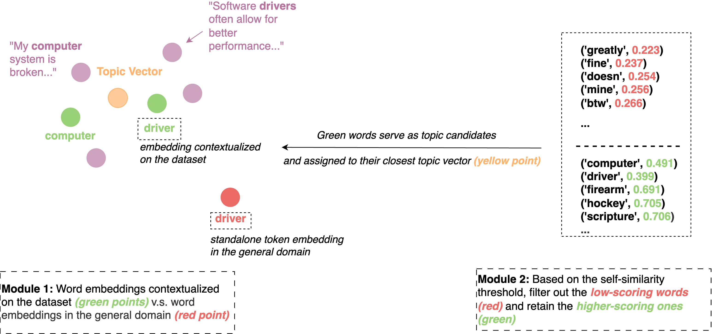

|
Yanan Ma
I am a PhD candidate in the Natural Language Processing and Text Mining group at the University of Manchester, expected to graduate in March 2025. Before my PhD, I obtained my master degree at South China Normal University, and worked 3 years at the information department of Children's Hospital Affiliated to Zhengzhou University.
My research interests lie in natural language processing, large language model, text mining, and health AI.
Specifically, I recently focus on large language model finetuning, benchmarking, alignment and reasoning, with a particular interest in the biomedical domain.
I received the PhD Scholarship, and Turning Scheme funding (2025 with Imperial Global Singapore) during my PhD study.
I previous won the Outstanding Graduate Joint Training Program Scholarship between South China Normal University and University of Glasgow in 2018.
Email /
Google Scholar /
Linkedin /
Github
|

|
Open to work!
I am actively seeking full-time positions, including Research Scientist, Research Fellow, and Postdoctoral Fellow roles.
- I am open to working in China, the UK, Switzerland, the USA, Australia, and Singapore.
- I welcome opportunities in both industry and academia, particularly in technology, quantitative finance, and biomedicine.
- Please feel free to contact me via email at yanan.ma@manchester.ac.uk or by telephone: (+86) 15521019025; (+44) 07421741828.
|
Current work
- Benchmarking LLMs on continuous glucose monitoring (CGM) QA task.
- Probing uncertainty and reasoning ability of LLMs across domains.
|
Recent News
- 2025.02-05 - I worked at Imperial Global Singapore as a research intern for the IN-CYPHER project!
- 2025.01.22 - Our paper (CAST) was accepted by NAACL'25 main!
- 2024.03.07 - Our review paper on type 1 diabetes self-care was accepted by JMIR Pediatrics and Parenting!
|
|

|
What Young People with Type 1 Diabetes Mellitus Talk About Online: A Large-Scale Analysis of Social Media Discussions Using Topic Modelling
Yanan Ma, Lamiece Hassan, Sabine N van der Veer, Goran Nenadic
JMIR Preprint, 2025
paper /
code
We curated a corpus of posts from young people with type 1 diabetes from social media, and identified their topics of interest using CAST.
|
|

|
CAST: Corpus-Aware Self-similarity Enhanced Topic modelling
Yanan Ma, Chenghao Xiao, Chenhan Yuan, Sabine N van der Veer, Lamiece Hassan, Chenghua Lin, Goran Nenadic
NAACL main, 2025
paper /
code
We introduced a new topic modelling approach, CAST, that builds upon candidate topic word embeddings contextualized on the dataset, and a novel self-similarity-based method to filter out less meaningful tokens.
|
|
|
Experiences and Views of Young People and Health Care Professionals of Using Social Media to Self-Manage Type 1 Diabetes Mellitus: Thematic Synthesis of Qualitative Studies
Yanan Ma, Kate Law, Lamiece Hassan, Goran Nenadic, Sabine N van der Veer
JMIR Pediatr Parent, 2024
paper
We thematic synthesized young people and healthcare professionals' views and experiences of using social media to self-manage type 1 diabetes.
|
|
{kind=link}